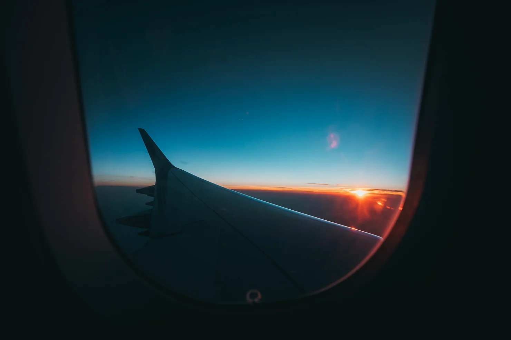

I was never acrophobic. Of course, the thumping against your ribs sometimes feels like you’re going to die of a heart attack right then and there when you’re climbing up the ladder; but oh, the view up there often leaves you wondering, “Why didn’t I do this earlier?” And the same applies to being up in the air at an altitude of 35,000 feet. Especially during the night. Everything starts with the take-off. You’re slowly sliding back into your seat, trying to get comfortable while all your organs shift for a moment before the smooth ride. You experience that oddly unsettling feeling and try to get past it by looking out the window and watch all the buildings, the streets, the roads, even your worries, and troubles get smaller and smaller with every passing moment. The more you move farther away, the more the view gets better. When you fly amidst the clouds, you can’t stop but get more curious about what’s out there. Undoubtedly there will be an endless blanket of stars, but somehow you desire that something else might be out there too. Probably, a sky filled with pouring confetti or at times we go to the extreme to dream about a portal to another world. But once the clouds clear, it’s so much better than anything one can imagine. The magic above the clouds, it’s astonishing how every person perceives it uniquely. The stars, it’s like the decoration on a Christmas tree to the black sky. And all of a sudden you’re like the 5-year-old kid that sticks his face up against a window each time he hears an ice-cream truck, sticking your nose up to that tiny window and trying to see how long the trail of the stars go. And finally giving up because all you see is infinity. Infinite space. It finally made sense why people say “Stars are uncountable”. People around you try to distract you momentarily with dinner stuff but no one knows you’re hooked on to the black beauty right outside. And you’re more surprised that they aren’t. You gobble up whatever they hand over to you and eagerly wait for the lights to go dim. The moment arrives. The ambiance inside the plane slowly matches with the sky when the crew members turn off all the lights and you can’t seem to control your enthusiasm. All the snoring noises get drowned out as you continue to stare in awe at nature’s perfection. You don’t need the eye-pads as you fight every urge to sleep just so that you don’t miss the view. And there it was. It was almost as if you were floating out there, trying to catch something that is miles away. But you don’t get disappointed instead, you get excited. Every single one is of different shape, different sparkle and all scattered across the sky but with one massive motive. To help you dream endlessly. To bring hope. And sometimes, maybe quite often it is the single roof above two star-crossed lovers with a long-distance relationship. “The closer you look, the lesser you see” fits perfect. Pins and needles in your nose remind you that you’ve again stuck your nose up that tiny window for too long. So you retract back into your seat and gaze out the open space. Maybe life would be less complicated if people pause once in a while and gaze. Gaze at beautiful things, things that are difficult to comprehend, things that make you feel content, sad, weep, agitated and perhaps even gazing at nothing might help at times. It’s stunning the way the stars and the sky capture your attention that you forget all about the moon. The moon that you thought followed you everywhere you went when you were a kid is nowhere to be found when you’re so close to it. At some point, it starts to feel like you’re lucid dreaming. You take a deep breath hoping to freeze that moment right there. You realize it’s the scent of peace along with some other scents which you don’t want to put your finger on. Someone is having a midnight snack. And it’s definitely not a good one. Who knew that being oblivious would make you feel serene? That blanket has been over you every night for the past two decades and yet, not once did you notice its beauty. A long, extended sight of the immense darkness and void leaves you wondering, “How far does it go anyway?” And no matter how silly the thoughts might seem, they still leave you pondering over the flawless existence of everything. The world we live in is chaotic for sure. But the sky? She flaunts her beauty in an innocent way. Unaware of the chaos, oblivious to imperfection, solely living on all those things that are good and pure. Perhaps that is how we must be too. There will be chaos among us, and sometimes between us. But the challenge lies in how we accept it. There are other planets where the mayhem is more than here but that sky? Never does it change. Trying to make people pure may not work at times but it shouldn’t stop you from being pure. Embrace the flaws, be able to find peace within yourself, once in a while pause and appreciate everything around you. Two seats ahead, I see a kid. Her face stuck up against the window just like I did, jaw dropped and eyes wide open. “Finally! ” I thought to myself and felt blissful that someone appreciates it as much as I do. The same sky looks so diverse through her eyes and mine. Having a situation might look equally diverse to your eyes and for someone from the outside. Taking a third perspective to make out the entire situation is what everyone needs. It’s what everyone calls maturity. At times self-scrutiny might be much more of a help and it’s not a piece of cake. Retrospection is useful as long as it stops at learning. All these thoughts arose from a thick, black, blanket. Neither did it need a well-published book nor did it require a box-office movie. Calmness was what it took. I look away from where I learn a lot to where I’m still learning. Even though it’s dim without the cabin lights, I could see all the sleeping, peaceful faces unaware of anything around them, and some staring at the mobiles and their laptops, the tired faces too; Tired from work, tired from travel, tired from partying way too much and tired because of life. Life is never fair. Or perhaps it works in funny ways that we don’t comprehend now or ever. It’s an unusual feeling of calmness looking at everyone without being noticed. Who knows? Maybe if we all utilized the entire potential of ours, we wouldn’t be here to start with. Maybe if instead of waiting for someone to make things happen and we went on with it, we could be at a higher growth rate. Both intellectually and morally. I turned back to the kid and she fell asleep drooling on the window. I chuckled and watched her mother pull her back into the seat and keep a hand over her like an extra seatbelt. Thinking about it, there’s nothing stronger than a mother’s, I felt. My gaze slowly turns towards the ground. It was as if my subconscious knew it was time to come back to Earth and to reality. But then it dawned on me. Escaping reality isn’t true. We coin new words just to get a break from everything and call it “Getting back to reality”. Reality is what we do, where we’re from, where we’re going and where we are. If things are going to be seen as “Taking a break from reality”, then nothing we ever do would come as close to satisfying us. Sure, the term reality does apply in some cases but when people start to see it as it is, life is a lot less complicated. It might look more beautiful than the runway lit by more than a thousand lights but right now, those little yellow lights look like a straight path to heaven. Literal sense too, in another context. For I, am about to go Home.
